Pruebas de hipótesis: valor p, proporción y media
| Módulo | Estadística para Analítica |
| Programa | Especialización en Big Data |
| Unidad | Unidad 3. Inferencia estadística |
| Saber | Pruebas de hipótesis: valor p, inferencia sobre una proporción y una media |
La pregunta de la sesión es esta: ¿los datos contradicen una afirmación sobre un parámetro? Un equipo de producto tiene una cifra histórica, rediseña algo, mide una muestra y obtiene un número distinto. Esa diferencia puede venir del cambio o del azar del muestreo, y una prueba de hipótesis es el procedimiento que separa las dos explicaciones con una regla fijada antes de mirar el resultado.
Al terminar esta guía sabrás hacer seis cosas:
- Formular una hipótesis nula y una alternativa a partir de una pregunta sobre un parámetro.
- Calcular el estadístico de prueba \(z\) para una proporción y \(t\) para una media.
- Obtener el valor p por simulación y con
scipy, e interpretarlo sin atribuirle lo que no dice. - Decidir con un nivel de significancia fijado de antemano y redactar la conclusión en el lenguaje del problema.
- Distinguir el error tipo I, el error tipo II y la potencia, y explicar qué cambia con el tamaño de la muestra.
- Separar la significancia estadística de la relevancia práctica.
La guía parte de un reto que conviene intentar antes de leer la teoría. Después construye una a una las piezas que ese reto necesita, lo resuelve paso a paso, y termina con una práctica sobre datos reales y un resumen. Las secciones se agrupan en cinco bloques:
- Preparación (secciones 1 y 2): notación, datos y el reto.
- Fundamentos (3 a 13): hipótesis, estadístico, valor p, decisión, error tipo I, etapas del contraste y lecturas erróneas del valor p.
- Aplicación (14 a 18): contraste para una proporción, contraste para una media, una o dos colas e intervalo de confianza.
- Errores y potencia (19 y 20): error tipo II, potencia y relevancia práctica.
- Cierre (21 a 23): solución del reto, práctica y resumen.
1 Notación y datos
Notación
Esta guía supone que conoces la distribución normal y la idea de distribución muestral: un estadístico calculado con una muestra cambia de una muestra a otra, y esa variación tiene una forma que se puede describir. Todo lo demás se define donde aparece. La tabla reúne los símbolos que ya se usan desde esta sección, con el nombre que reciben en el código.
| Concepto | Símbolo | Nombre en el código |
|---|---|---|
| Tamaño de la muestra | \(n\) | n |
| Proporción de la población: un parámetro, valor fijo y desconocido | \(p\) | p |
| Proporción de la muestra: un estadístico, valor calculado con los datos | \(\hat{p}\) | p_gorro |
| Media de la población | \(\mu\) | mu |
| Media de la muestra | \(\bar{x}\) | media_muestral |
| Desviación estándar de la muestra | \(s\) | desv_muestral |
| Error estándar: desviación estándar de un estadístico, es decir, cuánto varía de una muestra a otra | \(\mathrm{EE}\) | ee |
| Generador de números aleatorios con semilla | rng |
Los símbolos propios del contraste de hipótesis (\(H_0\), \(H_1\), \(z\), \(t\), \(\alpha\), \(\beta\)) se definen en la sección donde nacen y se reúnen de nuevo en el resumen. En la prosa y en las fórmulas el decimal lleva coma. Las salidas de Python llevan punto, porque así las imprime el lenguaje.
Los datos
La guía usa dos conjuntos. Cookie Cats es un experimento A/B de un juego móvil: cada fila es un jugador con la versión del juego que recibió (version, que vale gate_30 o gate_40) y dos columnas que indican si volvió a jugar un día y siete días después de instalarlo (retention_1 y retention_7). Saber 11 reúne los resultados de la prueba de Estado del periodo 2022-2, con una fila por estudiante. Usamos cinco de sus columnas: punt_global, punt_matematicas, cole_naturaleza (OFICIAL o NO OFICIAL), estu_genero (F o M) y fami_estratovivienda (Estrato 1 a Estrato 6).
Los dos archivos se descargan desde la página de la unidad y se guardan en la carpeta desde la que ejecutas el código: cookie_cats.csv y saber11_20224.csv (si prefieres, pandas también lee el .zip sin descomprimirlo). Saber 11 tiene más de un millón de filas, así que se lee siempre con usecols, que carga solo las columnas indicadas.
import pandas as pd
jugadores = pd.read_csv("cookie_cats.csv")
print(jugadores.groupby("version")["retention_7"].agg(["count", "mean"]).round(4))
columnas = ["punt_global", "punt_matematicas", "cole_naturaleza", "estu_genero", "fami_estratovivienda"]
saber = pd.read_csv("saber11_20224.csv", usecols=columnas)
print(saber.shape) count mean
version
gate_30 44700 0.1902
gate_40 45489 0.1820
(1065888, 5)La tabla muestra cuántos jugadores recibió cada versión y qué proporción volvió a los siete días: mean de una columna de verdadero y falso es la proporción de verdaderos. Saber 11 tiene 1 065 888 filas y las cinco columnas pedidas.
Datos: ICFES, Saber 11 2022-2 (datos.gov.co, CC BY-SA 4.0). Datos: experimento A/B Cookie Cats (DataCamp, Kaggle).
2 El reto
Intenta resolver este problema antes de leer los fundamentos. La guía lo retoma al final, con todas las herramientas a mano.
Contexto. Un juego móvil prueba dos diseños según el nivel donde aparece la primera barrera de espera: el nivel 30 (gate_30, el diseño actual) y el nivel 40 (gate_40, el rediseño). Se mide la retención a 7 días: la proporción de jugadores que vuelven a jugar siete días después de instalar el juego. Es un número entre 0 y 1.
Datos.
| Dato | Valor |
|---|---|
Línea base: retención a 7 días de todo gate_30, con 44 700 jugadores. Es un valor de referencia histórico que se toma como fijo y conocido |
0,1902 |
Muestra aleatoria de gate_40, con la semilla 2026 |
n = 2000 |
| Jugadores de la muestra que volvieron a los 7 días | 372, es decir 0,1860 |
El código siguiente produce esos datos. No resuelve nada: solo construye la muestra y reporta los tres números.
import numpy as np
import pandas as pd
datos = pd.read_csv("cookie_cats.csv")
gate_30 = datos[datos["version"] == "gate_30"]
gate_40 = datos[datos["version"] == "gate_40"]
linea_base = gate_30["retention_7"].mean()
rng = np.random.default_rng(2026)
muestra = rng.choice(gate_40["retention_7"], 2000, replace=False)
print(f"linea base: {linea_base:.4f}")
print(f"muestra: n = {len(muestra)}, retenidos = {muestra.sum()}")
print(f"retencion observada: {muestra.mean():.4f}")linea base: 0.1902
muestra: n = 2000, retenidos = 372
retencion observada: 0.1860rng.choice(..., 2000, replace=False) extrae 2000 valores al azar sin repetir ninguno: una muestra aleatoria simple de gate_40.
Pregunta. La retención de la muestra, 0,1860, es menor que la línea base, 0,1902. ¿Esa diferencia es atribuible al rediseño o al azar del muestreo?
Tarea y restricción. Define qué tan extremo debe ser el resultado de la muestra para que te convenzas de que el rediseño cambió la retención. Trabaja con Python, solo con la muestra y sin fórmulas previas: la idea es que descubras qué necesitas calcular.
Una solución razonable cumple tres criterios:
- Usa solo la muestra. Trabaja con los 2000 jugadores observados. La retención del resto del rediseño se desconoce.
- Cuantifica la incertidumbre. Indica con un número cuánto varía el resultado de una muestra a otra, en lugar de apoyarse en una impresión.
- Es reproducible. El código fija la semilla, de modo que otra persona que lo ejecute obtiene exactamente el mismo resultado.
Y deja por escrito tres cosas: el criterio, que es la regla de decisión escrita antes de calcular (qué tan extremo debe ser el resultado); la evidencia, que es el número que cuantifica la incertidumbre junto con el procedimiento que lo produjo; y la conclusión, que dice si la diferencia entre 0,1860 y 0,1902 se atribuye al rediseño o al azar, y con qué argumento.
Haz el intento ahora, aunque no llegues a una respuesta cerrada. Las secciones siguientes ponen nombre a lo que vas a tantear.
3 Qué es una hipótesis estadística
Desde el ejemplo
El reto menciona tres cantidades que conviene no confundir. La retención de la línea base, 0,1902, se midió sobre 44 700 jugadores de gate_30: la tomamos como un valor conocido y la llamamos \(p_0\) (se lee “p cero”). La retención del rediseño en toda la población de jugadores que lo reciban, que llamamos \(p\), se desconoce: es el parámetro. Y la retención de la muestra, 0,1860, es el estadístico \(\hat{p}\): ya se observó.
import pandas as pd
import numpy as np
datos = pd.read_csv("cookie_cats.csv")
gate_30 = datos[datos["version"] == "gate_30"]
gate_40 = datos[datos["version"] == "gate_40"]
p0 = gate_30["retention_7"].mean()
rng = np.random.default_rng(2026)
muestra = rng.choice(gate_40["retention_7"], 2000, replace=False)
print(f"línea base: p0 = {p0:.4f}, con {len(gate_30)} jugadores")
print(f"muestra: n = {len(muestra)}, retenidos = {muestra.sum()}")
print(f"p_gorro = {muestra.mean():.4f}")línea base: p0 = 0.1902, con 44700 jugadores
muestra: n = 2000, retenidos = 372
p_gorro = 0.1860En el código, p0 es \(p_0\) y p_gorro es \(\hat{p}\). La pregunta del equipo trata de \(p\): ¿la retención del rediseño difiere de 0,1902? Para responderla solo tenemos \(\hat{p}\), y \(\hat{p}\) cambiaría si extrajéramos otra muestra.
Definición
Una hipótesis estadística es una afirmación sobre el valor de un parámetro de la población. Por ejemplo, “la retención del rediseño es 0,1902” se escribe \(p = 0{,}1902\). Un contraste de hipótesis es el procedimiento que usa los datos de una muestra para decidir si una de esas afirmaciones es compatible con ellos.
Qué significa y qué no significa
Las hipótesis hablan de parámetros, nunca de estadísticos. Decir “\(\hat{p}\) es 0,1902” no tiene sentido como hipótesis, porque \(\hat{p}\) ya se observó y vale 0,1860. Lo incierto es \(p\), y los datos nos dan información parcial sobre él, con un margen de error que depende de la muestra.
En una línea. Una hipótesis afirma algo sobre \(p\) o sobre \(\mu\); la muestra aporta la evidencia.
4 Hipótesis nula y alternativa
Desde el ejemplo
Para decidir si el rediseño cambió la retención, ponemos frente a frente dos afirmaciones. La primera dice que no pasó nada: la retención del rediseño sigue siendo la histórica, \(p = 0{,}1902\). La segunda dice que sí pasó algo. Los datos van a ayudarnos a decidir si la primera se sostiene.
Definición
La hipótesis nula, \(H_0\), fija el parámetro en el valor de referencia, por lo general el de “ningún cambio”. Se presume verdadera mientras los datos no la contradigan. La hipótesis alternativa, \(H_1\), expresa lo que queremos establecer: que el parámetro es menor, mayor o distinto del valor de referencia. En el caso del reto:
\[H_0:\ p = p_0 \qquad\text{frente a}\qquad H_1:\ p \neq p_0\]
El razonamiento se parece al de un juicio penal. La tabla pone las dos situaciones lado a lado.
| Juicio penal | Contraste de hipótesis |
|---|---|
| El acusado se presume inocente | \(H_0\) se presume verdadera |
| Las pruebas del proceso | Los datos de la muestra |
| Se condena solo con pruebas más allá de toda duda razonable | Se rechaza \(H_0\) solo si los datos serían muy improbables bajo \(H_0\) |
| Absolver | No rechazar \(H_0\) |
Qué significa y qué no significa
\(H_0\) lleva el signo de igualdad por una razón práctica: un valor exacto de \(p\) nos permite calcular qué resultados produce el azar si ese valor es el verdadero. Sin ese cálculo no hay forma de medir cuán sorprendente es lo que observamos. La carga de la prueba recae en \(H_1\): los datos tienen que contradecir a \(H_0\) con claridad antes de que la abandonemos.
Absolver no declara inocente al acusado, solo reconoce que faltó evidencia. Del mismo modo, no rechazar \(H_0\) significa falta de evidencia contra ella, no que \(H_0\) sea verdadera. Esta distinción reaparece varias veces en la guía y la sección Solución del reto la cierra con un resultado concreto.
En una línea. \(H_0\) es el punto de partida, \(H_1\) es lo que hay que demostrar, y los datos son las pruebas.
5 Cómo se formula un par de hipótesis
Desde el ejemplo
Se parte de una pregunta del negocio, escrita antes de mirar los datos. Se identifica el parámetro que la responde, se fija el valor de referencia con el que se compara, y de ahí salen \(H_0\) y \(H_1\).
| Paso | Caso del reto (proporción) | Caso con una media |
|---|---|---|
| Pregunta | ¿El rediseño cambia la retención a 7 días? | ¿El puntaje global de los colegios no oficiales difiere del promedio nacional de Saber 11, 250,14? |
| Parámetro | \(p\): la retención del rediseño en la población | \(\mu\): la media del puntaje global en colegios no oficiales |
| Valor de referencia | \(p_0 = 0{,}1902\) | \(\mu_0 = 250{,}14\) |
| Hipótesis nula | \(H_0:\ p = p_0\) | \(H_0:\ \mu = \mu_0\) |
| Hipótesis alternativa | \(H_1:\ p \neq p_0\) | \(H_1:\ \mu \neq \mu_0\) |
Definición: las tres formas de la alternativa
La alternativa toma la dirección de la pregunta, y hay tres formas posibles. Escritas para una proporción:
- \(H_1:\ p \neq p_0\) admite diferencias en ambas direcciones. Es un contraste bilateral.
- \(H_1:\ p < p_0\) admite solo que el parámetro sea menor. Es un contraste unilateral (a la izquierda).
- \(H_1:\ p > p_0\) admite solo que sea mayor. Es un contraste unilateral a la derecha.
Tres reglas ordenan la formulación. \(H_0\) siempre lleva la igualdad. \(H_1\) sigue la pregunta del estudio. Y ambas se escriben antes de ver los datos, porque elegirlas después de mirar el resultado contamina la decisión.
El reto pregunta si la retención cambió, sin decir hacia dónde, de modo que su contraste es bilateral. Para ver cómo nace el valor p conviene empezar con una sola cola, así que las secciones que siguen usan primero \(H_1:\ p < p_0\), que responde “¿el rediseño reduce la retención?”, y pasan a la forma bilateral del reto en cuanto el mecanismo está claro.
Qué significa y qué no significa
Una hipótesis no contiene a la muestra. Ni \(H_0\) ni \(H_1\) mencionan \(\hat{p}\) ni \(\bar{x}\): hablan del parámetro. Y la alternativa no se escoge porque los datos “apunten” hacia un lado: si 0,1860 está por debajo de 0,1902 pero la pregunta era bilateral, la alternativa sigue siendo \(p \neq p_0\).
En una línea. Pregunta, parámetro, referencia, hipótesis: siempre en ese orden y antes de calcular.
6 El estadístico de prueba
Desde el ejemplo
Observamos 0,1860 y la referencia es 0,1902: la diferencia es \(-0{,}0042\). ¿Es grande o pequeña? Depende de cuánto suele variar \(\hat{p}\) de una muestra a otra. Una diferencia de 0,004 sería enorme si \(\hat{p}\) casi no se moviera, y trivial si se moviera mucho. Hay que medir la diferencia en unidades de esa variación.
Definición
El estadístico de prueba es un número calculado con la muestra que mide la discrepancia entre los datos y \(H_0\), y cuya distribución se conoce cuando \(H_0\) es verdadera. Para una proporción es
\[z = \frac{\hat{p} - p_0}{\sqrt{p_0\,(1 - p_0)\,/\,n}}\]
donde:
- \(\hat{p}\) es la proporción observada en la muestra.
- \(p_0\) es la proporción que afirma \(H_0\).
- \(n\) es el tamaño de la muestra.
- El denominador es el error estándar de \(\hat{p}\) calculado suponiendo \(H_0\) verdadera, por eso usa \(p_0\) y no \(\hat{p}\). Lo escribimos \(\mathrm{EE}\).
El cociente expresa la diferencia en errores estándar: es un cambio de escala. Un \(z\) de \(-2\) significa que \(\hat{p}\) quedó dos errores estándar por debajo de \(p_0\).
import numpy as np
p0, n, retenidos = 0.1902, 2000, 372
p_gorro = retenidos / n
ee = np.sqrt(p0 * (1 - p0) / n)
estadistico = (p_gorro - p0) / ee
print(f"diferencia = {p_gorro - p0:.4f}, ee bajo H0 = {ee:.5f}")
print(f"estadístico z = {estadistico:.3f}")diferencia = -0.0042, ee bajo H0 = 0.00878
estadístico z = -0.479np.sqrt calcula la raíz cuadrada. En el código, ee es \(\mathrm{EE}\) y estadistico es \(z\). La salida dice que la diferencia es \(-0{,}0042\), que el error estándar vale \(0{,}00878\) y que por tanto \(z = -0{,}479\): \(\hat{p}\) está a 0,479 errores estándar por debajo de \(p_0\).
Qué significa y qué no significa
La distribución de \(z\) bajo \(H_0\) no depende de \(n\) ni de \(p_0\). Cuando \(H_0\) es verdadera, el teorema del límite central (la proporción muestral se distribuye aproximadamente normal con \(n\) grande) implica que \(z\) sigue aproximadamente la normal estándar, \(N(0,1)\): una normal con media 0 y desviación estándar 1. Por eso una sola tabla, o una sola función de scipy, sirve para cualquier proporción. El estadístico \(z\) es una distancia medida en errores estándar y no una probabilidad: la probabilidad aparece más adelante, con el valor p.
En una línea. El estadístico convierte “qué tan lejos quedó la muestra de \(H_0\)” en un número comparable.
7 El estadístico cuando H0 es cierta
Desde el ejemplo
Antes de calcular nada con la muestra real, simulemos un mundo donde sabemos que \(H_0\) es verdadera. Construimos un universo con \(p = p_0 = 0{,}1902\) y extraemos 10 000 muestras de \(n = 2000\) jugadores. De cada una calculamos su \(\hat{p}\) y su \(z\). El histograma de esos 10 000 valores muestra qué produce el azar cuando no hay ningún efecto.
Simulación. Aquí la verdad se conoce por construcción: \(p = 0{,}1902\) y \(n = 2000\).
import numpy as np
p0, n = 0.1902, 2000
rng = np.random.default_rng(2026)
retenidos_sim = rng.binomial(n, p0, size=10_000)
p_gorro_sim = retenidos_sim / n
ee = np.sqrt(p0 * (1 - p0) / n)
estadistico_sim = (p_gorro_sim - p0) / ee
print(f"desviación de p_gorro_sim = {p_gorro_sim.std(ddof=1):.5f}")
print(f"media de z = {estadistico_sim.mean():.3f}")
print(f"desviación de z = {estadistico_sim.std(ddof=1):.3f}")desviación de p_gorro_sim = 0.00873
media de z = 0.015
desviación de z = 0.995rng.binomial(n, p0, size=10_000) genera 10 000 números, cada uno la cantidad de jugadores retenidos entre \(n\) jugadores que vuelven con probabilidad \(p_0\). Dividir entre \(n\) da los 10 000 valores de \(\hat{p}\). El argumento ddof=1 hace que .std divida entre \(n - 1\), como lo hace el \(s\) de las muestras.
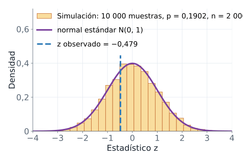
Definición
La distribución del estadístico bajo la hipótesis nula (o distribución nula) es la distribución de los valores que toma el estadístico, de muestra en muestra, cuando \(H_0\) es verdadera. Es la vara con la que medimos lo que observamos.
Qué significa y qué no significa
Tres hechos salen de la simulación. La desviación de los \(\hat{p}\) simulados, 0,00873, casi coincide con el error estándar teórico, 0,00878: el \(\mathrm{EE}\) describe esa variación. La media de \(z\) es 0,015 y su desviación 0,995, es decir, aproximadamente 0 y 1: \(z\) sigue la normal estándar. Y el valor observado en el reto, \(z = -0{,}479\), cae en la zona central del histograma: resultados así aparecen con frecuencia cuando no hay ningún efecto.
Esto último no prueba que \(H_0\) sea cierta. Dice que el azar, por sí solo, produce con facilidad un \(z\) como el nuestro. La sección siguiente mide esa frecuencia.
En una línea. Si \(H_0\) es cierta, \(z\) se comporta como una \(N(0,1)\), y con ella sabemos qué es raro y qué es común.
8 El valor p
Desde el ejemplo
¿Qué tan sorprendente es \(z = -0{,}479\) si \(H_0\) es cierta? Una forma de medirlo es contar. De cada 100 muestras que produce el azar bajo \(H_0\), ¿cuántas dan un \(z\) igual de lejano a \(H_0\) que el nuestro, o más? Esa fracción es el valor p. Empezamos con la alternativa \(H_1: p < p_0\), donde “más lejano” significa “más pequeño”, y miramos solo la cola izquierda.
Definición
El valor p es la probabilidad, calculada suponiendo que \(H_0\) es verdadera, de obtener un estadístico igual de extremo que el observado o más extremo, en la dirección de \(H_1\). Para \(H_1: p < p_0\):
\[\text{valor p} = P(Z \le z_{\text{obs}} \mid H_0)\]
donde:
- \(Z\) es el estadístico antes de observar la muestra: una variable aleatoria que sigue \(N(0,1)\) bajo \(H_0\).
- \(z_{\text{obs}}\) es el valor que calculamos con la muestra real, aquí \(-0{,}479\).
- La barra vertical \(\mid\) se lee “suponiendo que”: la probabilidad se calcula en el mundo donde \(H_0\) es verdadera.
Es el área bajo la curva a la izquierda de \(z_{\text{obs}}\), la cola izquierda: el extremo de la curva más allá de ese valor.
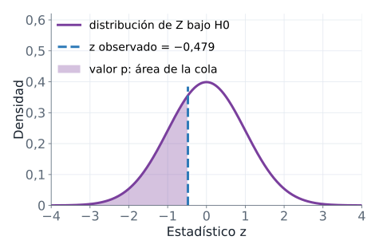
Cada forma de \(H_1\) fija qué cola cuenta:
- Con \(H_1: p < p_0\), cuenta la cola izquierda: \(P(Z \le z_{\text{obs}} \mid H_0)\).
- Con \(H_1: p > p_0\), cuenta la cola derecha: \(P(Z \ge z_{\text{obs}} \mid H_0)\).
- Con \(H_1: p \neq p_0\) cuentan las dos colas. Como la normal estándar es simétrica, el valor p bilateral es el doble de la cola que contiene a \(z_{\text{obs}}\): \(P(|Z| \ge |z_{\text{obs}}| \mid H_0) = 2\,P(Z \ge |z_{\text{obs}}|)\).
En esta sección y en la siguiente usamos una sola cola (\(H_1: p < p_0\)) solo para ver el mecanismo. El valor p del reto es bilateral, 0,632, y la sección Calcular el valor p lo obtiene al final.
Qué significa y qué no significa
Un valor p grande indica que un resultado así es frecuente cuando \(H_0\) es cierta: los datos no contradicen la afirmación. Un valor p pequeño indica que sería raro: los datos son difíciles de conciliar con \(H_0\). El valor p mide la sorpresa de los datos bajo \(H_0\). No mide la probabilidad de que \(H_0\) sea verdadera, un error común que la sección “Lo que el valor p no dice” desarma con detalle.
En una línea. El valor p es el área de la cola, calculada en el mundo donde \(H_0\) es verdadera.
9 Calcular el valor p
Desde el ejemplo
Tres caminos llevan al mismo número con \(n = 2000\), 372 retenidos y \(p_0 = 0{,}1902\). El primero es contar en la simulación: la fracción de muestras simuladas con 372 retenidos o menos. El segundo es la prueba binomial exacta: bajo \(H_0\), el número de retenidos \(X\) sigue una distribución binomial (el número de éxitos en \(n\) ensayos independientes, cada uno con la misma probabilidad de éxito) con \(n = 2000\) y probabilidad \(p_0\), y el valor p es \(P(X \le 372)\). El tercero es la aproximación normal: \(P(Z \le z_{\text{obs}})\).
import numpy as np
from scipy import stats
p0, n, retenidos = 0.1902, 2000, 372
rng = np.random.default_rng(2026)
retenidos_sim = rng.binomial(n, p0, size=10_000)
valor_p_sim = (retenidos_sim <= retenidos).mean()
prueba = stats.binomtest(retenidos, n, p0, alternative="less")
estadistico = (retenidos / n - p0) / np.sqrt(p0 * (1 - p0) / n)
print(f"valor p por simulación = {valor_p_sim:.4f}")
print(f"valor p exacto con binomtest = {prueba.pvalue:.4f}")
print(f"valor p con la normal = {stats.norm.cdf(estadistico):.4f}")
print(f"valor p bilateral con la normal = {2 * stats.norm.sf(abs(estadistico)):.4f}")valor p por simulación = 0.3230
valor p exacto con binomtest = 0.3280
valor p con la normal = 0.3161
valor p bilateral con la normal = 0.6322Las funciones nuevas:
stats.binomtest(k, n, p, alternative="less")hace la prueba binomial exacta; su atributo.pvaluees el valor p. Conalternative="less"cuenta la cola izquierda, \(P(X \le k)\).stats.norm.cdf(z)es la acumulada de la normal estándar, \(P(Z \le z)\): el área a la izquierda de \(z\).stats.norm.sf(z)es la cola derecha, \(P(Z > z)\). Aplicada a \(|z|\) y multiplicada por 2 da el valor p bilateral.
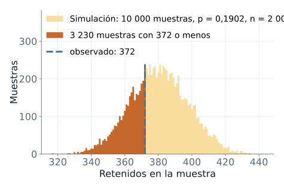
Con la simulación, 3230 de 10 000 muestras tienen 372 retenidos o menos, lo que da 0,3230, el área oscura de la figura. La prueba exacta da 0,3280 y la normal, 0,3161. Los tres números casi coinciden, y la prueba exacta es la referencia porque no aproxima nada. Para el contraste bilateral del reto, el valor p con la normal es el doble de la cola, 0,6322.
Definición
Calcular el valor p es ubicar el estadístico observado en la distribución nula y medir el área de la cola que \(H_1\) señala. La simulación lo hace contando, la binomial lo hace con la distribución exacta del número de retenidos y la normal lo hace con la distribución aproximada de \(z\).
Qué significa y qué no significa
Un valor p de 0,3280 dice que, si el rediseño no cambiara la retención, una de cada tres muestras de 2000 jugadores mostraría una retención igual o más baja que 0,1860. Eso es lo habitual, no un resultado raro. Lo de la aproximación normal tiene un límite: funciona bien cuando \(n\,p_0\) y \(n\,(1 - p_0)\) son al menos 10, una condición que revisamos en la sección del procedimiento completo.
En una línea. Tres formas de calcular la misma cola; la simulación te la deja ver.
10 La decisión y el nivel de significancia
Desde el ejemplo
Tenemos un valor p. Falta decidir cuándo es lo bastante pequeño como para rechazar \(H_0\), y esa regla tiene que existir antes de ver los datos. Si el umbral se escogiera después, siempre habría un umbral que justificara lo que ya queremos concluir.
Definición
El nivel de significancia, \(\alpha\) (alfa), es la probabilidad máxima de rechazar \(H_0\) cuando es verdadera que el analista acepta correr. Se fija antes de ver los datos. El valor usual es \(\alpha = 0{,}05\), una convención y no una ley. La regla de decisión es:
- Si el valor p es menor o igual que \(\alpha\), se rechaza \(H_0\).
- Si el valor p es mayor que \(\alpha\), no se rechaza \(H_0\).
Existe una forma equivalente. La región de rechazo reúne los valores del estadístico tan extremos que, bajo \(H_0\), ocurrirían con probabilidad no mayor que \(\alpha\). En el contraste bilateral con \(z\) es \(|z| \ge z_{1-\alpha/2}\), donde \(z_{1-\alpha/2}\) es el valor crítico: el valor que deja una probabilidad \(\alpha/2\) a su derecha en la normal estándar; por simetría, su opuesto deja \(\alpha/2\) a su izquierda. Rechazar por valor p y rechazar por región de rechazo da siempre la misma decisión.
import numpy as np
from scipy import stats
p0, n, retenidos, alfa = 0.1902, 2000, 372, 0.05
estadistico = (retenidos / n - p0) / np.sqrt(p0 * (1 - p0) / n)
valor_p = 2 * stats.norm.sf(abs(estadistico))
z_crit = stats.norm.ppf(1 - alfa / 2)
print(f"valor p = {valor_p:.3f}, alfa = {alfa}")
print(f"se rechaza H0 por el valor p: {valor_p <= alfa}")
print(f"valor crítico = {z_crit:.3f}, |z| = {abs(estadistico):.3f}")
print(f"se rechaza H0 por la región de rechazo: {abs(estadistico) >= z_crit}")valor p = 0.632, alfa = 0.05
se rechaza H0 por el valor p: False
valor crítico = 1.960, |z| = 0.479
se rechaza H0 por la región de rechazo: Falsestats.norm.ppf(q) es la función inversa de la acumulada: devuelve el valor \(z\) que deja una probabilidad \(q\) a su izquierda. Con \(q = 1 - \alpha/2 = 0{,}975\) da 1,960.
El valor p bilateral, 0,632, es mayor que \(\alpha = 0{,}05\), y \(|z| = 0{,}479\) es menor que 1,960: no se rechaza \(H_0\). En el lenguaje del caso: con esta muestra, la diferencia entre 0,1860 y 0,1902 es compatible con el azar del muestreo. Con la alternativa unilateral de la sección anterior se llega a la misma decisión, porque 0,3280 también supera 0,05.
Qué significa y qué no significa
El resultado se redacta siempre con uno de dos verbos: “se rechaza \(H_0\)” o “no se rechaza \(H_0\)”. Nunca se “acepta” \(H_0\), porque la decisión descansa en falta de evidencia, no en una demostración. Y \(\alpha\) tiene una lectura de frecuencia: es el riesgo que asumimos de rechazar una \(H_0\) verdadera, un error que tiene nombre.
El error tipo I es rechazar \(H_0\) cuando es verdadera: un falso positivo. Su probabilidad es \(\alpha\). La sección siguiente lo comprueba con una simulación.
En una línea. Se fija \(\alpha\) antes, se compara el valor p con \(\alpha\) y se redacta la conclusión en el lenguaje del caso.
11 El error tipo I, comprobado por simulación
Desde el ejemplo
Si \(\alpha = 0{,}05\) es la frecuencia con que rechazamos una \(H_0\) verdadera, una simulación debería mostrarlo. Construimos 1000 muestras de \(n = 2000\) en un mundo donde \(H_0\) es verdadera, \(p = 0{,}1902\), y a cada una le aplicamos el mismo contraste. Como en la sección del valor p, usamos la alternativa unilateral \(H_1: p < p_0\).
Simulación. Aquí la verdad se conoce por construcción: \(p = 0{,}1902\), así que cada rechazo es un error.
import numpy as np
from scipy import stats
p0, n, alfa = 0.1902, 2000, 0.05
rng = np.random.default_rng(2026)
retenidos_sim = rng.binomial(n, p0, size=1_000)
valores_p = [stats.binomtest(x, n, p0, alternative="less").pvalue
for x in retenidos_sim]
rechazos = sum(v <= alfa for v in valores_p)
print(f"contrastes con H0 verdadera: {len(valores_p)}")
print(f"rechazos de H0: {rechazos}")
print(f"proporción de rechazos = {rechazos / len(valores_p):.3f}")contrastes con H0 verdadera: 1000
rechazos de H0: 50
proporción de rechazos = 0.050La lista valores_p guarda el valor p de cada uno de los 1000 contrastes, y rechazos cuenta los que fueron menores o iguales que \(\alpha\).
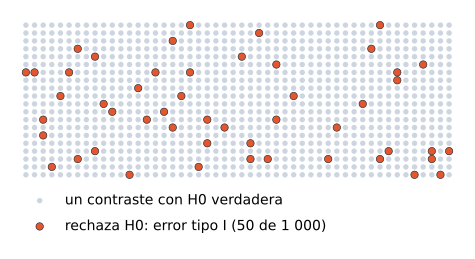
Rechazan 50 de 1000, una proporción de 0,050. Como \(H_0\) es verdadera en todas, cada rechazo es un error tipo I.
Qué significa y qué no significa
El nivel \(\alpha\) es una frecuencia de largo plazo: con \(\alpha = 0{,}05\), un contraste con \(H_0\) verdadera rechaza cerca de 5 de cada 100 veces. En una sola muestra no sabemos si estamos en una de las cinco. El procedimiento garantiza el riesgo promedio; ninguna decisión individual trae esa garantía.
En una línea. \(\alpha\) se puede ver: es la fracción de muestras que engañan cuando \(H_0\) es cierta.
12 Las seis etapas de un contraste
Con las piezas anteriores, el procedimiento completo se ordena en seis etapas. Es la misma secuencia para una proporción y para una media.
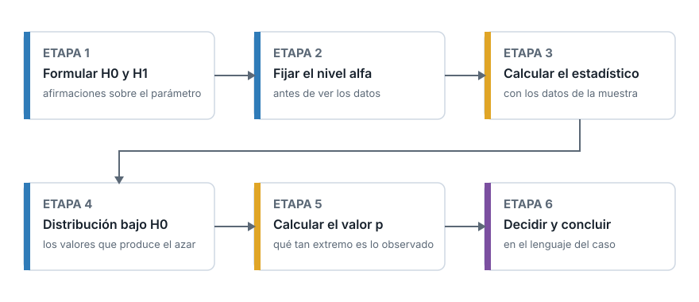
- Formular \(H_0\) y \(H_1\) sobre el parámetro, a partir de la pregunta.
- Fijar \(\alpha\), antes de ver los datos.
- Calcular el estadístico con la muestra: \(z\) para una proporción, \(t\) para una media.
- Obtener la distribución del estadístico bajo \(H_0\): los valores que produce el azar.
- Calcular el valor p: qué tan extremo es el estadístico observado dentro de esa distribución.
- Decidir y concluir: comparar el valor p con \(\alpha\), decidir sobre \(H_0\) y redactar la conclusión en el lenguaje del caso.
Las etapas 1 y 2 se completan antes de abrir los datos. Las etapas 3 a 6 son cálculo y lectura.
13 Lo que el valor p no dice
El valor p es el número más citado y más malinterpretado de la estadística aplicada. Hay tres lecturas erróneas frecuentes.
Primera lectura errónea: el valor p es la probabilidad de que \(H_0\) sea verdadera. El valor p se calcula suponiendo que \(H_0\) es verdadera, así que no puede medir la probabilidad de \(H_0\). Un valor p de 0,3280 (el unilateral de las secciones anteriores) no asigna esa probabilidad a \(H_0\). Responde otra pregunta: si \(H_0\) fuera cierta, ¿cuán frecuentes serían datos como estos?
Segunda lectura errónea: un valor p mayor que \(\alpha\) demuestra que \(H_0\) es verdadera. No rechazar \(H_0\) equivale a absolver: faltó evidencia. A partir de aquí pasamos del valor p unilateral, 0,3280, al bilateral del reto, 0,632, que es el que corresponde a la pregunta. Ese valor p no prueba que el rediseño deje la retención intacta. La sección de errores tipo I y II muestra qué tan poco puede probar una muestra pequeña.
Tercera lectura errónea: un valor p pequeño indica un efecto grande o importante. Con una muestra muy grande, una diferencia mínima produce un valor p pequeño. El valor p informa si el azar explica mal la diferencia, no cuánto vale esa diferencia. La relevancia práctica se evalúa aparte, como veremos en la sección Significancia estadística y relevancia práctica.
Una cuarta fuente de error no está en la lectura sino en el procedimiento: elegir \(\alpha\) o la cola de \(H_1\) después de ver el resultado. Esa elección retroactiva infla el riesgo de falso positivo, como muestra la sección sobre una o dos colas.
14 Contraste para una proporción: el procedimiento completo
Desde el ejemplo
Ya tenemos todas las piezas para el contraste bilateral del reto, que queda así: \(H_0: p = 0{,}1902\) frente a \(H_1: p \neq 0{,}1902\), con \(\alpha = 0{,}05\) fijado antes de calcular.
Definición
El contraste \(z\) para una proporción usa el estadístico de la sección anterior, \(z = (\hat{p} - p_0)/\sqrt{p_0(1-p_0)/n}\), y el valor p bilateral \(2\,P(Z \ge |z|)\). Exige tres condiciones:
- La muestra es aleatoria simple y las observaciones son independientes entre sí. Una muestra pequeña frente a la población, de menos del 10 %, cumple de sobra la independencia aproximada.
- \(n\,p_0 \ge 10\): se esperan al menos 10 éxitos bajo \(H_0\).
- \(n\,(1 - p_0) \ge 10\): se esperan al menos 10 fracasos bajo \(H_0\).
Las dos últimas garantizan que la aproximación normal es razonable. Si no se cumplen, se usa la prueba binomial exacta.
import numpy as np
import pandas as pd
from scipy import stats
datos = pd.read_csv("cookie_cats.csv")
gate_30 = datos[datos["version"] == "gate_30"]
gate_40 = datos[datos["version"] == "gate_40"]
p0 = gate_30["retention_7"].mean()
rng = np.random.default_rng(2026)
muestra = rng.choice(gate_40["retention_7"], 2000, replace=False)
n, p_gorro = len(muestra), muestra.mean()
estadistico = (p_gorro - p0) / np.sqrt(p0 * (1 - p0) / n)
valor_p = 2 * stats.norm.sf(abs(estadistico))
print(f"p0 = {p0:.4f} p_gorro = {p_gorro:.4f}")
print(f"n*p0 = {n * p0:.1f} n*(1-p0) = {n * (1 - p0):.1f}")
print(f"z = {estadistico:.3f} valor p = {valor_p:.3f}")p0 = 0.1902 p_gorro = 0.1860
n*p0 = 380.4 n*(1-p0) = 1619.6
z = -0.479 valor p = 0.632Las dos condiciones se cumplen de sobra: se esperan 380,4 éxitos y 1619,6 fracasos. El estadístico es \(z = -0{,}479\) y el valor p bilateral, 0,632. Como \(0{,}632 > 0{,}05\), no se rechaza \(H_0\): los datos no aportan evidencia de que el rediseño haya cambiado la retención. Esto no demuestra que \(H_0\) sea cierta.
Qué significa y qué no significa
El resultado responde la pregunta “¿es plausible que el azar produzca 0,1860 cuando la retención real es 0,1902?” con un sí claro. No responde “¿el rediseño cambió la retención?” con un no. Esa diferencia se aclara en la sección Errores tipo I y II, y potencia, donde medimos cuánta potencia tenía esta muestra.
En una línea. Estadístico \(z\), valor p con las dos colas, decisión contra \(\alpha\), y tres condiciones que revisar antes de confiar en la normal.
15 Contraste para una media: el estadístico t
Desde el ejemplo
Cambiamos de parámetro. Con Saber 11 como población, el puntaje global promedio de todo el país es 250,14. Un analista pregunta si la media del puntaje global de los estudiantes de colegios no oficiales difiere de ese valor. Dispone de una muestra aleatoria de 50 de ellos. Con \(\mu\) la media poblacional de esos colegios, que se desconoce, formula \(H_0: \mu = \mu_0 = 250{,}14\) frente a \(H_1: \mu \neq \mu_0\).
Definición
Si conociéramos la desviación estándar poblacional \(\sigma\), el estadístico sería \(z = (\bar{x} - \mu_0)/(\sigma/\sqrt{n})\). Como \(\sigma\) se desconoce, se reemplaza por la desviación estándar de la muestra, \(s\), y el estadístico se llama \(t\):
\[t = \frac{\bar{x} - \mu_0}{s\,/\,\sqrt{n}}\]
donde:
- \(\bar{x}\) es la media de la muestra y \(s\) su desviación estándar (calculada con divisor \(n - 1\)).
- \(\mu_0\) es la media que afirma \(H_0\).
- \(n\) es el tamaño de la muestra.
- \(s/\sqrt{n}\) es el error estándar estimado de la media muestral: el error estándar de \(\bar{x}\) con \(s\) en lugar de \(\sigma\).
Bajo \(H_0\), \(t\) sigue una distribución t de Student con \(n - 1\) grados de libertad. La t de Student es simétrica alrededor de 0, como la normal, pero con colas más pesadas, porque usar \(s\) añade incertidumbre. Los grados de libertad cuentan cuántas desviaciones independientes sirven para estimar la variabilidad: con \(n\) datos y una media estimada con ellos, quedan \(n - 1\). Cuando los grados de libertad crecen, la t se acerca a la normal. Aquí hay \(n - 1 = 49\).
Los supuestos son dos: una muestra aleatoria simple con observaciones independientes; y una población aproximadamente normal, o un \(n\) suficiente para que el teorema del límite central haga normal a \(\bar{x}\). Con muestras muy pequeñas la normalidad pesa mucho más.
import numpy as np
import pandas as pd
from scipy import stats
rng = np.random.default_rng(2026)
saber = pd.read_csv("saber11_20224.csv", usecols=["punt_global", "cole_naturaleza"])
no_oficial = saber[saber["cole_naturaleza"] == "NO OFICIAL"]["punt_global"]
muestra = no_oficial.sample(n=50, random_state=rng)
print(f"poblacion = {len(no_oficial)} n = {len(muestra)} fraccion = {len(muestra) / len(no_oficial):.5f}")
print(f"media poblacional (no oficial) = {no_oficial.mean():.2f}")
print(f"Shapiro-Wilk de la muestra: valor p = {stats.shapiro(muestra).pvalue:.3f}")
print(f"t_49(0.975) = {stats.t.ppf(0.975, df=49):.3f} t_49(0.95) = {stats.t.ppf(0.95, df=49):.3f}")
print(f"z(0.975) = {stats.norm.ppf(0.975):.3f}")poblacion = 240956 n = 50 fraccion = 0.00021
media poblacional (no oficial) = 272.55
Shapiro-Wilk de la muestra: valor p = 0.397
t_49(0.975) = 2.010 t_49(0.95) = 1.677
z(0.975) = 1.960Datos: ICFES, Saber 11 2022-2 (datos.gov.co, CC BY-SA 4.0).
.sample(n=50, random_state=rng) extrae 50 elementos al azar sin reemplazo. stats.shapiro aplica la prueba de Shapiro-Wilk, cuya \(H_0\) afirma que la población es normal; con un valor p de 0,397 no hay evidencia contra la normalidad, aunque eso, como siempre, no la demuestra. stats.t.ppf(q, df=gl) es el valor de la t con gl grados de libertad que deja una probabilidad \(q\) a su izquierda: con 49 grados de libertad y \(q = 0{,}975\) es 2,010, un poco mayor que el 1,960 de la normal, que es el efecto de las colas pesadas. La muestra es el 0,021 % de los 240 956 estudiantes de colegios no oficiales, así que la independencia no se compromete por extraer sin reemplazo.
Qué significa y qué no significa
El estadístico \(t\) mide, en errores estándar estimados, cuánto se aleja \(\bar{x}\) de \(\mu_0\). La t sustituye a la normal porque estimar \(\sigma\) con \(s\) añade incertidumbre, y las colas pesadas la reflejan. Con \(n\) grande, la diferencia práctica entre usar \(t\) y usar \(z\) desaparece.
En una línea. Con una media, \(s\) reemplaza a \(\sigma\) y la normal cede su lugar a la t con \(n - 1\) grados de libertad.
16 El contraste de una media en código
Con la misma muestra de 50 estudiantes, stats.ttest_1samp calcula \(t\) y el valor p bilateral en una llamada. Su argumento popmean es \(\mu_0\). El método .std() de pandas divide entre \(n - 1\), igual que el \(s\) de la fórmula.
import numpy as np
import pandas as pd
from scipy import stats
rng = np.random.default_rng(2026)
saber = pd.read_csv("saber11_20224.csv", usecols=["punt_global", "cole_naturaleza"])
no_oficial = saber[saber["cole_naturaleza"] == "NO OFICIAL"]
muestra = no_oficial["punt_global"].sample(n=50, random_state=rng)
media_muestral, desv_muestral = muestra.mean(), muestra.std()
estadistico, valor_p = stats.ttest_1samp(muestra, popmean=250.14)
t_a_mano = (media_muestral - 250.14) / (desv_muestral / np.sqrt(len(muestra)))
print(f"media = {media_muestral:.2f} s = {desv_muestral:.2f}")
print(f"t = {estadistico:.3f} valor p = {valor_p:.4f}")
print(f"t calculado a mano = {t_a_mano:.3f}")media = 267.62 s = 51.79
t = 2.386 valor p = 0.0209
t calculado a mano = 2.386La media de la muestra es 267,62 y su desviación estándar 51,79. El estadístico es \(t = 2{,}386\), y el cálculo a mano con la fórmula da el mismo número: la media muestral está a 2,386 errores estándar por encima de \(\mu_0\). El valor p, 0,0209, es la probabilidad de que una t con 49 grados de libertad supere 2,386 en valor absoluto, es decir, el área de las dos colas.
Como \(0{,}0209 < 0{,}05\), se rechaza \(H_0\): la media del puntaje global de los colegios no oficiales difiere de 250,14 y, por el signo positivo de \(t\), es mayor. La media real de esos colegios, 272,55, calculada con la población completa, confirma que rechazar fue la decisión correcta. Con \(n = 50\) no siempre se acierta; aquí la diferencia real (unos 22 puntos) es grande y se detecta.
17 Una o dos colas
El mismo \(t = 2{,}386\) da valores p distintos según la alternativa. stats.ttest_1samp lo controla con el argumento alternative, que admite "two-sided" (bilateral, el valor por omisión), "greater" (\(H_1: \mu > \mu_0\)) y "less" (\(H_1: \mu < \mu_0\)).
import numpy as np
import pandas as pd
from scipy import stats
rng = np.random.default_rng(2026)
saber = pd.read_csv("saber11_20224.csv",
usecols=["punt_global", "cole_naturaleza"])
no_oficial = saber[saber["cole_naturaleza"] == "NO OFICIAL"]
muestra = no_oficial["punt_global"].sample(n=50, random_state=rng)
for h1 in ["two-sided", "greater", "less"]:
prueba = stats.ttest_1samp(muestra, 250.14, alternative=h1)
print(f"{h1:>9}: valor p = {prueba.pvalue:.4f}")two-sided: valor p = 0.0209
greater: valor p = 0.0105
less: valor p = 0.9895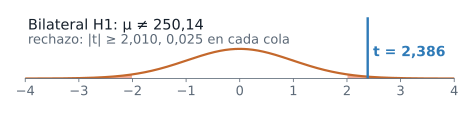
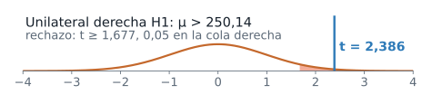
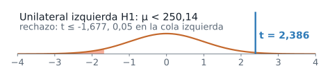
Las tres filas dicen:
- Bilateral, \(H_1: \mu \neq \mu_0\): el nivel \(\alpha = 0{,}05\) se reparte, 0,025 en cada cola. Se rechaza si \(|t| \ge 2{,}010\). Como \(2{,}386\) supera ese valor crítico, se rechaza \(H_0\); el valor p bilateral es 0,0209.
- Unilateral a la derecha, \(H_1: \mu > \mu_0\): todo \(\alpha\) va a una sola cola, el valor crítico baja a 1,677 y el valor p es 0,0105, la mitad del bilateral.
- Unilateral a la izquierda, \(H_1: \mu < \mu_0\): con \(t = 2{,}386\) el valor p es 0,9895, porque los datos apuntan al lado opuesto de lo que afirma \(H_1\).
La dirección de \(H_1\) se fija antes de ver los datos, según la pregunta del estudio. Si miras el signo de \(t\) y escoges después la cola que lo favorece, rechazarás cuando \(|t| \ge 1{,}677\), y bajo \(H_0\) eso ocurre el 10 % de las veces en lugar del 5 %: el riesgo real de falso positivo se duplica sin que el análisis lo informe. Un contraste unilateral se justifica cuando una diferencia en el otro sentido no tendría ninguna consecuencia, y esa decisión se toma antes de abrir el archivo.
18 El intervalo de confianza y el contraste
Desde el ejemplo
Con la misma muestra podemos construir un intervalo de confianza para \(\mu\) y repetir el contraste con tres valores de referencia: 250,14 y los dos extremos del intervalo.
Definición
Un intervalo de confianza de nivel \(1 - \alpha\) es un rango de valores plausibles para el parámetro, construido con un procedimiento que captura el valor real con probabilidad \(1 - \alpha\). Para una media:
\[\bar{x} \pm t_{n-1,\,1-\alpha/2}\;\frac{s}{\sqrt{n}}\]
donde \(t_{n-1,\,1-\alpha/2}\) es el valor crítico de la t con \(n - 1\) grados de libertad que deja \(\alpha/2\) en la cola derecha; con \(n = 50\) y \(\alpha = 0{,}05\) vale 2,010, como vimos arriba.
import numpy as np
import pandas as pd
from scipy import stats
rng = np.random.default_rng(2026)
saber = pd.read_csv("saber11_20224.csv",
usecols=["punt_global", "cole_naturaleza"])
no_oficial = saber[saber["cole_naturaleza"] == "NO OFICIAL"]
muestra = no_oficial["punt_global"].sample(n=50, random_state=rng)
ic = stats.ttest_1samp(muestra, 250.14).confidence_interval(0.95)
for mu0 in [250.14, ic.low, ic.high]:
valor_p = stats.ttest_1samp(muestra, mu0).pvalue
print(f"mu0 = {mu0:.2f} valor p = {valor_p:.3f}")mu0 = 250.14 valor p = 0.021
mu0 = 252.90 valor p = 0.050
mu0 = 282.34 valor p = 0.050.confidence_interval(0.95) devuelve el intervalo de 95 % asociado a la prueba t, con sus extremos low y high: 252,90 y 282,34. El valor \(\mu_0 = 250{,}14\) queda fuera y su valor p es 0,021. En los dos extremos el valor p es exactamente 0,050, el nivel \(\alpha\).
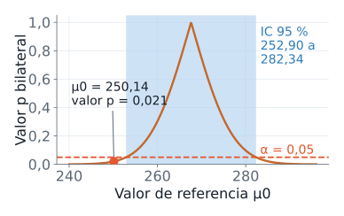
Qué significa y qué no significa
La relación es exacta para la media con la t, y aproximada para una proporción (el intervalo usa \(\hat{p}\) y el contraste usa \(p_0\)): el contraste bilateral de nivel \(\alpha\) rechaza \(H_0: \mu = \mu_0\) si y solo si \(\mu_0\) cae fuera del intervalo de confianza de nivel \(1 - \alpha\). El intervalo es, por tanto, la lista de todos los valores de referencia que el contraste no rechazaría. Eso lo hace más informativo que el contraste solo: además de decir si 250,14 se rechaza, indica entre qué valores se mueve \(\mu\).
La media real de los colegios no oficiales, 272,55, está dentro del intervalo. El intervalo no garantiza capturarla en cada muestra, solo en 95 de cada 100.
En una línea. El intervalo contiene los valores de \(\mu_0\) que no se rechazan; el contraste pregunta por uno solo.
19 Errores tipo I y II, y potencia
Desde el ejemplo
Hasta ahora controlamos un solo riesgo: rechazar una \(H_0\) verdadera. La decisión se toma sin conocer la verdad, y \(H_0\) puede ser verdadera o falsa. Con dos decisiones posibles, resultan cuatro combinaciones.
| \(H_0\) es verdadera | \(H_0\) es falsa | |
|---|---|---|
| No se rechaza \(H_0\) | Decisión correcta | Error tipo II, con probabilidad \(\beta\) |
| Se rechaza \(H_0\) | Error tipo I, con probabilidad \(\alpha\) | Decisión correcta, con probabilidad \(1 - \beta\) |
El error tipo II es no rechazar \(H_0\) cuando es falsa, con probabilidad \(\beta\) (beta). La potencia, \(1 - \beta\), es la probabilidad de rechazar \(H_0\) cuando es falsa: la capacidad del contraste de detectar una diferencia que existe.
En el caso de Cookie Cats medimos la retención de todo gate_40, 45 489 jugadores: 0,1820. Por convenio didáctico tomamos ese valor como el valor real de \(p\) y la línea base, 0,1902, como un valor fijo; con ese convenio \(H_0\) es falsa. Con esa verdad supuesta podemos preguntar cuánta potencia tiene un contraste con \(n = 2000\), \(n = 10\,000\) y \(n = 20\,000\). El cálculo tiene dos pasos. Primero, la región de rechazo expresada en \(\hat{p}\): se rechaza si \(\hat{p}\) cae por debajo de bajo o por encima de alto, los valores que dejan \(\alpha/2\) a cada lado bajo \(H_0\). Segundo, la probabilidad de caer en esa región cuando \(p\) es el valor real, 0,1820, que es la potencia. Una simulación con muestras reales de gate_40 lo comprueba.
import numpy as np
import pandas as pd
from scipy import stats
datos = pd.read_csv("cookie_cats.csv", usecols=["version", "retention_7"])
p0 = datos[datos["version"] == "gate_30"]["retention_7"].mean()
gate_40 = datos[datos["version"] == "gate_40"]["retention_7"].to_numpy()
p_real, z_crit = gate_40.mean(), stats.norm.ppf(0.975)
print(f"p0 = {p0:.4f} p real de gate_40 = {p_real:.4f} N = {len(gate_40)}")
for n in [2000, 10000, 20000]:
ee0 = np.sqrt(p0 * (1 - p0) / n)
ee1 = np.sqrt(p_real * (1 - p_real) / n)
bajo, alto = p0 - z_crit * ee0, p0 + z_crit * ee0
potencia = stats.norm.cdf((bajo - p_real) / ee1) + stats.norm.sf((alto - p_real) / ee1)
print(f"n = {n}: rechaza H0 si p_gorro < {bajo:.4f} o > {alto:.4f}; potencia = {potencia:.3f}")
rng = np.random.default_rng(2026)
ee0 = np.sqrt(p0 * (1 - p0) / 2000)
z = [(rng.choice(gate_40, 2000, replace=False).mean() - p0) / ee0 for _ in range(1000)]
print(f"Simulación, 1000 muestras de n = 2000: proporción que rechaza H0 = {np.mean(np.abs(z) > z_crit):.3f}")p0 = 0.1902 p real de gate_40 = 0.1820 N = 45489
n = 2000: rechaza H0 si p_gorro < 0.1730 o > 0.2074; potencia = 0.150
n = 10000: rechaza H0 si p_gorro < 0.1825 o > 0.1979; potencia = 0.553
n = 20000: rechaza H0 si p_gorro < 0.1848 o > 0.1956; potencia = 0.844
Simulación, 1000 muestras de n = 2000: proporción que rechaza H0 = 0.158Los tres primeros resultados vienen de la fórmula: ee0 es el error estándar bajo \(H_0\) y ee1 el que corresponde al valor real, y stats.norm.cdf y stats.norm.sf suman las dos colas de la región de rechazo. La última línea es una simulación: 1000 muestras de \(n = 2000\) de gate_40 y la proporción de ellas que rechaza \(H_0\).
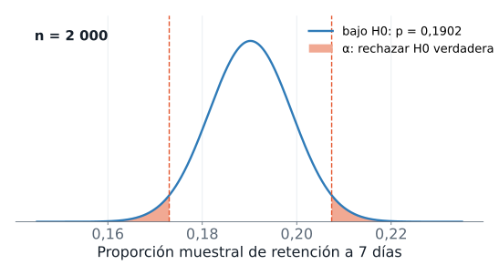
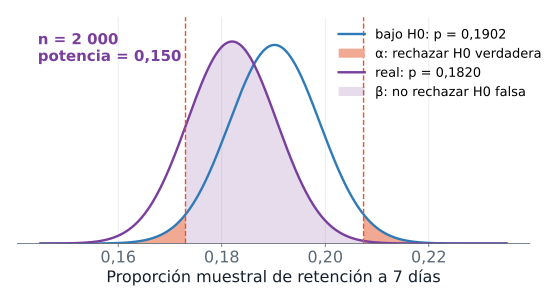
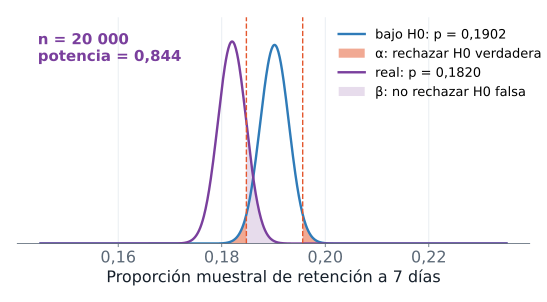
Con \(n = 2000\), el contraste rechaza \(H_0\) si \(\hat{p}\) cae por debajo de 0,1730 o por encima de 0,2074. Pero el \(\hat{p}\) de una muestra típica de gate_40 queda cerca de 0,1820, dentro de esos límites, así que la potencia es 0,150: el contraste detecta la diferencia real solo una vez de cada siete, y \(\beta\) vale alrededor de 0,850. La simulación confirma el cálculo: de 1000 muestras de 2000 jugadores, rechazan 0,158. Con \(n = 10\,000\) la potencia sube a 0,553 y con \(n = 20\,000\) llega a 0,844.
Qué significa y qué no significa
La probabilidad \(\alpha\) la fija el analista. La probabilidad \(\beta\) no se fija: depende del tamaño de la muestra, del tamaño de la diferencia real y de \(\alpha\). Disminuye al aumentar \(n\) o la diferencia real, y aumenta si se reduce \(\alpha\) sin subir \(n\). Es el equilibrio entre dos errores: ningún contraste los elimina a la vez.
La consecuencia práctica es que “no se rechaza \(H_0\)” significa poco cuando la potencia es baja. El reto es el ejemplo: no rechazó \(H_0\) y, sin embargo, con el convenio de esta sección la diferencia de 0,0082 existe. El contraste calculó bien; con 2000 jugadores no tenía poder para ver esa diferencia, y eso es un error tipo II.
En una línea. Dos errores posibles, \(\alpha\) y \(\beta\); la potencia \(1 - \beta\) crece con \(n\) y con el tamaño de la diferencia.
20 Significancia estadística y relevancia práctica
Desde el ejemplo
Hagamos una pregunta hipotética. La diferencia medida con todos los jugadores de gate_40 frente a la línea base es 0,1820 menos 0,1902, es decir \(-0{,}0082\): 82 jugadores retenidos menos por cada 10 000. Supongamos que una muestra de cada tamaño \(n\) hubiera dado exactamente ese \(\hat{p}\), y tomemos la línea base como un valor fijo. ¿Qué valor p tendríamos?
import numpy as np
import pandas as pd
from scipy import stats
datos = pd.read_csv("cookie_cats.csv")
linea_base = datos[datos["version"] == "gate_30"]["retention_7"].mean()
gate_40 = datos[datos["version"] == "gate_40"]["retention_7"]
p_gorro, n_total = gate_40.mean(), len(gate_40)
print(f"p0 = {linea_base:.4f} p_gorro = {p_gorro:.4f} diferencia = {p_gorro - linea_base:.4f} ({(p_gorro - linea_base) * 10000:.0f} por cada 10000)")
for n in [2000, 10000, n_total]:
estadistico = (p_gorro - linea_base) / np.sqrt(linea_base * (1 - linea_base) / n)
print(f"n = {n}: z = {estadistico:.2f} valor p = {2 * stats.norm.sf(abs(estadistico)):.3f}")
ee = np.sqrt(p_gorro * (1 - p_gorro) / n_total)
print(f"IC 95 % para p: [{p_gorro - 1.96 * ee:.4f}, {p_gorro + 1.96 * ee:.4f}] para p - p0: [{p_gorro - 1.96 * ee - linea_base:.4f}, {p_gorro + 1.96 * ee - linea_base:.4f}]")
print(f"n desde el que la misma diferencia da valor p < 0.05: {(1.96 / (p_gorro - linea_base)) ** 2 * linea_base * (1 - linea_base):.0f}")p0 = 0.1902 p_gorro = 0.1820 diferencia = -0.0082 (-82 por cada 10000)
n = 2000: z = -0.93 valor p = 0.350
n = 10000: z = -2.09 valor p = 0.037
n = 45489: z = -4.46 valor p = 0.000
IC 95 % para p: [0.1785, 0.1855] para p - p0: [-0.0117, -0.0047]
n desde el que la misma diferencia da valor p < 0.05: 8797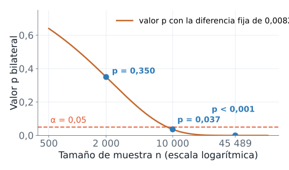
Definición
Una diferencia tiene significancia estadística cuando su valor p es menor o igual que \(\alpha\): difícilmente se explica por el azar del muestreo. Tiene relevancia práctica cuando su tamaño importa para la decisión: costos, beneficios y la diferencia mínima que justificaría actuar. Son dos preguntas distintas y la primera no contesta la segunda.
Qué significa y qué no significa
La misma diferencia de 0,0082 produce un valor p de 0,350 con 2000 jugadores, de 0,037 con 10 000 y menor que 0,001 con los 45 489 (la salida imprime 0.000: el redondeo a tres decimales). El \(z = -4{,}46\) de esa última fila toma \(p_0\) como fijo; la sección Solución del reto lo recalcula reconociendo también la incertidumbre de la línea base. Desde \(n = 8797\) esa diferencia ya resulta significativa al nivel de 5 %. El valor p de 0,350 de esta tabla y el 0,632 del reto no son comparables directamente: la muestra del reto quedó más cerca de la línea base (\(\hat{p} = 0{,}1860\)) que la diferencia medida con todos los jugadores (0,1820), y por eso no alcanzaba.
El tamaño de la muestra decide si una diferencia se vuelve significativa, y no cambia lo que la diferencia significa para el negocio. Por eso se informa la estimación con su intervalo: la retención de gate_40 cae entre 0,47 y 1,17 puntos porcentuales respecto de la línea base, con 95 % de confianza si tratamos a los 45 489 jugadores de gate_40 como una muestra de un proceso que podría repetirse y la línea base como un valor fijo. Si los 82 jugadores perdidos por cada 10 000 importan más o menos que el beneficio que traiga el rediseño es una decisión de negocio: el valor p solo complementa.
En una línea. Un valor p pequeño dice que el azar explica mal la diferencia; el tamaño y el contexto dicen si importa.
21 Solución del reto
Con las herramientas completas, resolvemos el reto siguiendo las seis etapas.
- Formular. El equipo pregunta si el rediseño cambió la retención a 7 días, sin señalar una dirección. \(p\) es la retención del rediseño en la población y \(p_0 = 0{,}1902\) la línea base: \(H_0: p = p_0\) frente a \(H_1: p \neq p_0\).
- Fijar \(\alpha\). El criterio del reto era una regla escrita antes de calcular: \(\alpha = 0{,}05\), y se rechaza \(H_0\) si el valor p es menor o igual que 0,05.
- Calcular el estadístico. \(z = (\hat{p} - p_0)/\sqrt{p_0(1-p_0)/n}\) con \(\hat{p} = 0{,}1860\) y \(n = 2000\).
- Distribución bajo \(H_0\). Normal estándar, con \(n\,p_0 = 380{,}4\) y \(n\,(1-p_0) = 1619{,}6\) por encima de 10.
- Valor p. El área de las dos colas más allá de \(|z|\).
- Decidir y concluir, con el intervalo de confianza que da el tamaño plausible de \(p\), y con la comparación final contra todos los jugadores de
gate_40.
import numpy as np
import pandas as pd
from scipy import stats
alfa = 0.05
datos = pd.read_csv("cookie_cats.csv", usecols=["version", "retention_7"])
gate_30 = datos[datos["version"] == "gate_30"]["retention_7"]
p0 = gate_30.mean()
gate_40 = datos[datos["version"] == "gate_40"]["retention_7"]
rng = np.random.default_rng(2026)
muestra = rng.choice(gate_40, size=2000, replace=False)
n, p_gorro = len(muestra), muestra.mean()
ee = np.sqrt(p0 * (1 - p0) / n)
estadistico = (p_gorro - p0) / ee
valor_p = 2 * stats.norm.sf(abs(estadistico))
print(f"p_gorro = {p_gorro:.4f}, linea base = {p0:.4f}")
print(f"z = {estadistico:.3f}, valor p = {valor_p:.3f}, se rechaza H0: {valor_p <= alfa}")
ee_gorro = np.sqrt(p_gorro * (1 - p_gorro) / n)
print(f"IC 95 % para p: [{p_gorro - 1.96 * ee_gorro:.4f}, {p_gorro + 1.96 * ee_gorro:.4f}]")
n_total = len(gate_40)
z_total = (gate_40.mean() - p0) / np.sqrt(p0 * (1 - p0) / n_total)
print(f"con los {n_total} jugadores de gate_40 y p0 fijo: p = {gate_40.mean():.4f}, z = {z_total:.2f}")
p_comun = (gate_30.sum() + gate_40.sum()) / (len(gate_30) + len(gate_40))
ee_dif = np.sqrt(p_comun * (1 - p_comun) * (1 / len(gate_30) + 1 / len(gate_40)))
z_dos = (gate_40.mean() - p0) / ee_dif
print(f"con la incertidumbre de la linea base: z = {z_dos:.2f}, valor p = {2 * stats.norm.sf(abs(z_dos)):.4f}")p_gorro = 0.1860, linea base = 0.1902
z = -0.479, valor p = 0.632, se rechaza H0: False
IC 95 % para p: [0.1689, 0.2031]
con los 45489 jugadores de gate_40 y p0 fijo: p = 0.1820, z = -4.46
con la incertidumbre de la linea base: z = -3.16, valor p = 0.0016Lectura. El estadístico es \(z = -0{,}479\) y el valor p bilateral, 0,632, mayor que \(\alpha = 0{,}05\): no se rechaza \(H_0\). La diferencia entre 0,1860 y 0,1902 es compatible con el azar del muestreo, y la muestra no aporta evidencia de que el rediseño haya cambiado la retención. El intervalo de confianza de 95 % para \(p\), de 0,1689 a 0,2031, contiene tanto la línea base como la retención medida con todos los jugadores de gate_40, 0,1820: la muestra no distingue entre ellos.
Esa lectura admite una segunda parte que importa. Si leyéramos “no se rechaza \(H_0\)” como “el rediseño no cambió nada”, nos equivocaríamos. Con todos los jugadores de gate_40, la retención es 0,1820 y, tomando \(p_0\) como fijo, \(z = -4{,}46\). Si también reconocemos la incertidumbre de la línea base, medida con 44 700 jugadores, el estadístico de dos proporciones (que estima el error estándar con la proporción combinada de ambos grupos) da \(z = -3{,}16\) y valor p de 0,0016, última línea de la salida: sigue siendo significativo. Con los jugadores completos la diferencia se distingue del azar, y por el convenio de la sección de errores y potencia la tomamos como la diferencia real. La muestra del reto tenía una potencia de 0,150 frente a esa diferencia, y su resultado es un error tipo II: no rechazar una \(H_0\) falsa por falta de potencia. El reto no encuentra el cambio porque 2000 jugadores no alcanzan para verlo.
Respuesta a la pregunta del reto. Con esta muestra no hay evidencia de que el rediseño cambiara la retención, y tampoco hay evidencia de que no la cambiara. Para saber si la diferencia es atribuible al rediseño hace falta una muestra mayor: a partir de unos 8800 jugadores una diferencia como la medida con todos los jugadores, tomando la línea base como fija, ya sería significativa al 5 %, y con unos 20 000 la potencia ronda 0,84.
Revisa los tres criterios del reto. El procedimiento usa solo la muestra. Cuantifica la incertidumbre con el error estándar, el valor p y el intervalo. Y es reproducible porque fija la semilla.
22 Práctica
Enunciado
Con Saber 11 como población (1 065 888 estudiantes) practicas dos contrastes. Cada uno usa solo una muestra; la población, que aquí sí conocemos, sirve después para comprobar la decisión. Trabaja con \(\alpha = 0{,}05\).
Contraste (a): proporción de mujeres. \(H_0\) afirma \(p = 0{,}5\) y \(H_1\) afirma \(p \neq 0{,}5\), un contraste bilateral. Con una muestra aleatoria de 400 estudiantes:
- Calcula la proporción muestral \(\hat{p}\) y el estadístico \(z\).
- Calcula el valor p.
- Decide y redacta la conclusión.
- Compara con la proporción real de mujeres en la población.
Contraste (b): matemáticas en Estrato 6. \(\mu_0\) es la media nacional del puntaje de matemáticas, la media de toda la población. \(H_0\) afirma \(\mu = \mu_0\) para los estudiantes de Estrato 6 y \(H_1\) afirma \(\mu \neq \mu_0\). Con una muestra aleatoria de 60 estudiantes de ese estrato:
- Calcula el estadístico \(t\) y su valor p.
- Decide y redacta la conclusión.
- Compara con la media real de Estrato 6, calculada con la población completa.
El código de arranque solo prepara los datos: no extrae muestras ni calcula contrastes.
import numpy as np
import pandas as pd
from scipy import stats
rng = np.random.default_rng(2026)
cols = ["estu_genero", "fami_estratovivienda", "punt_matematicas"]
datos = pd.read_csv("saber11_20224.csv", usecols=cols)
mujeres = (datos["estu_genero"] == "F").to_numpy()
filtro = datos["fami_estratovivienda"] == "Estrato 6"
estrato_6 = datos.loc[filtro, "punt_matematicas"]
print(f"estudiantes en la poblacion: {len(datos)}")
print(f"estudiantes de Estrato 6: {len(estrato_6)}")estudiantes en la poblacion: 1065888
estudiantes de Estrato 6: 7758mujeres vale verdadero para cada mujer, así que su media en una muestra es \(\hat{p}\). datos.loc[filtro, "punt_matematicas"] selecciona las filas donde el filtro es verdadero y devuelve la columna indicada: aquí, los puntajes de matemáticas de Estrato 6.
Datos: ICFES, Saber 11 2022-2 (datos.gov.co, CC BY-SA 4.0).
Intenta las dos soluciones antes de seguir.
Solución de referencia: contraste (a)
El estadístico es \(z = (\hat{p} - 0{,}5)/\sqrt{0{,}5 \cdot 0{,}5 / 400}\) y el valor p es el área de las dos colas más allá de \(|z|\). La condición de la normal se cumple: \(n\,p_0 = 200\) y \(n\,(1-p_0) = 200\).
import numpy as np
import pandas as pd
from scipy import stats
rng = np.random.default_rng(2026)
datos = pd.read_csv("saber11_20224.csv", usecols=["estu_genero"])
mujeres = (datos["estu_genero"] == "F").to_numpy()
muestra = rng.choice(mujeres, size=400, replace=False)
p_gorro = muestra.mean()
estadistico = (p_gorro - 0.5) / np.sqrt(0.5 * 0.5 / 400)
valor_p = 2 * stats.norm.sf(abs(estadistico))
print(f"p_gorro = {p_gorro:.4f}, z = {estadistico:.3f}")
print(f"valor p = {valor_p:.4f}")
print(f"proporcion real = {mujeres.mean():.4f}")p_gorro = 0.5600, z = 2.400
valor p = 0.0164
proporcion real = 0.5430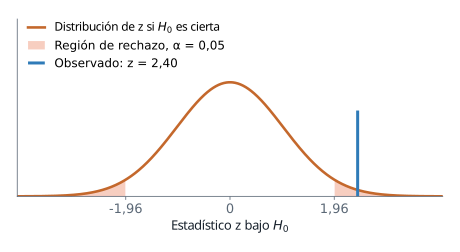
La proporción de mujeres en la muestra es 0,5600 y \(z = 2{,}400\), es decir, 2,4 errores estándar por encima de 0,5. El valor p es 0,0164. Como \(0{,}0164 < \alpha = 0{,}05\), se rechaza \(H_0\): los datos no son compatibles con \(p = 0{,}5\) a ese nivel de significancia. La proporción real es 0,5430: rechazar fue correcto, aunque \(\hat{p}\) (0,5600) sobrestima el parámetro. El contraste decide si \(p\) difiere de 0,5; no lo estima.
Solución de referencia: contraste (b)
El estadístico es \(t = (\bar{x} - \mu_0)/(s/\sqrt{n})\) con \(n - 1 = 59\) grados de libertad, y stats.ttest_1samp lo calcula en una llamada.
import numpy as np
import pandas as pd
from scipy import stats
rng = np.random.default_rng(2026)
cols = ["fami_estratovivienda", "punt_matematicas"]
datos = pd.read_csv("saber11_20224.csv", usecols=cols)
mu_0 = datos["punt_matematicas"].mean()
filtro = datos["fami_estratovivienda"] == "Estrato 6"
estrato_6 = datos.loc[filtro, "punt_matematicas"]
muestra = rng.choice(estrato_6, size=60, replace=False)
prueba = stats.ttest_1samp(muestra, popmean=mu_0)
print(f"mu_0 = {mu_0:.2f}, media_muestral = {muestra.mean():.2f}")
print(f"t = {prueba.statistic:.2f}, valor p = {prueba.pvalue:.3f}")
print(f"media real de Estrato 6 = {estrato_6.mean():.2f}")mu_0 = 50.59, media_muestral = 47.93
t = -1.40, valor p = 0.167
media real de Estrato 6 = 48.83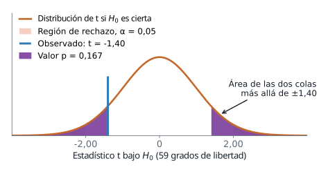
La media nacional es \(\mu_0 = 50{,}59\) y la media de la muestra de Estrato 6 es 47,93. El estadístico es \(t = -1{,}40\) y el valor p bilateral 0,167: cerca de una de cada seis muestras daría un \(|t|\) al menos así de grande si \(H_0\) fuera cierta. Como \(0{,}167 > 0{,}05\), no se rechaza \(H_0\). La media real de Estrato 6 es 48,83, a 1,76 puntos de \(\mu_0\): existe una diferencia, pero con 60 estudiantes la prueba no la separa del azar. No rechazar \(H_0\) no demuestra que \(\mu = \mu_0\).
Lectura de la práctica
Los dos contrastes dan decisiones distintas. En (a), el valor p, 0,0164, es menor que \(\alpha\) y se rechaza \(H_0\): la proporción real, 0,5430, es distinta de 0,5. En (b), el valor p, 0,167, supera a \(\alpha\) y no se rechaza \(H_0\), aunque la media real, 48,83, difiere de 50,59. Saber 11 describe a quienes presentaron la prueba; los contrastes cuantifican diferencias en esa población y no explican sus causas.
El reto planteaba una pregunta del mismo tipo: la retención de 2000 jugadores de gate_40 frente a la línea base 0,1902. Rechazar \(H_0\) habría indicado que el azar del muestreo explica mal la diferencia. El resultado fue 372 retenidos de 2000, \(\hat{p} = 0{,}1860\), \(z = -0{,}479\) y valor p de 0,632: no se rechaza \(H_0\). Un valor p alto no demuestra que no haya diferencia. El contraste (b) lo muestra: una diferencia real de 1,76 puntos tampoco se detectó. En el reto ocurre lo mismo, y con \(n = 2000\) una diferencia pequeña pasa inadvertida. Antes de concluir “no hay cambio” hay que preguntar si la muestra alcanza para verlo.
23 Resumen de la sesión
El mapa del contraste
| Proporción | Media | |
|---|---|---|
| Parámetro y referencia | \(p\) y \(p_0\) | \(\mu\) y \(\mu_0\) |
| Hipótesis | \(H_0: p = p_0\) frente a \(H_1: p \neq p_0\), \(p < p_0\) o \(p > p_0\) | \(H_0: \mu = \mu_0\) frente a \(H_1: \mu \neq \mu_0\), \(\mu < \mu_0\) o \(\mu > \mu_0\) |
| Estadístico | \(z = \dfrac{\hat{p} - p_0}{\sqrt{p_0(1-p_0)/n}}\) | \(t = \dfrac{\bar{x} - \mu_0}{s/\sqrt{n}}\) |
| Distribución bajo \(H_0\) | Normal estándar \(N(0,1)\) | t de Student con \(n - 1\) grados de libertad |
| Supuestos | Muestra aleatoria simple; \(n\,p_0 \ge 10\) y \(n\,(1-p_0) \ge 10\) | Muestra aleatoria simple; población aproximadamente normal o \(n\) suficiente |
Función en scipy |
stats.norm.sf o stats.binomtest |
stats.ttest_1samp |
| Decisión | Rechazar \(H_0\) si el valor p es menor o igual que \(\alpha\) | Igual |
| Conclusión | En el lenguaje del caso: “hay (o no hay) evidencia de que…” | Igual |
Los símbolos nuevos de la sesión
| Símbolo | Significado | Nombre en el código |
|---|---|---|
| \(H_0\), \(H_1\) | Hipótesis nula y alternativa | |
| \(p_0\), \(\mu_0\) | Valor de referencia que afirma \(H_0\) | p0, mu_0 |
| \(z\), \(t\) | Estadístico de prueba para una proporción y para una media | estadistico |
| valor p | Probabilidad, bajo \(H_0\), de un estadístico al menos tan extremo como el observado | valor_p |
| \(\alpha\) | Nivel de significancia: probabilidad aceptada de un error tipo I | alfa |
| \(\beta\) | Probabilidad de un error tipo II | |
| \(1 - \beta\) | Potencia | potencia |
| \(z_{1-\alpha/2}\), \(t_{n-1,\,1-\alpha/2}\) | Valores críticos del contraste bilateral | z_crit |
Qué recordar
- Una hipótesis habla de un parámetro. \(H_0\) lleva la igualdad y se presume cierta; \(H_1\) sigue la pregunta y es lo que hay que demostrar. Ambas se escriben antes de ver los datos.
- El estadístico mide la distancia entre los datos y \(H_0\) en errores estándar. Su distribución bajo \(H_0\) es conocida y es la vara de medir.
- El valor p es la probabilidad, suponiendo \(H_0\), de un resultado al menos tan extremo como el observado. Se decide comparándolo con \(\alpha\), fijado antes.
- Un intervalo de confianza de nivel \(1 - \alpha\) contiene exactamente los valores de referencia que el contraste bilateral de nivel \(\alpha\) no rechaza (exacto para la media; aproximado para la proporción).
- Hay dos errores: rechazar una \(H_0\) verdadera (tipo I, probabilidad \(\alpha\)) y no rechazar una falsa (tipo II, probabilidad \(\beta\)). La potencia \(1 - \beta\) crece con \(n\).
- Cualquier diferencia distinta de cero termina siendo significativa si \(n\) crece lo suficiente. Se informa la estimación, su intervalo y el valor p, y la relevancia se juzga en el contexto.
Errores frecuentes
- Leer el valor p como la probabilidad de que \(H_0\) sea cierta.
- Concluir que \(H_0\) es verdadera porque el valor p superó a \(\alpha\). Solo falta evidencia, y con poca potencia falta casi siempre.
- Tomar un valor p pequeño por un efecto grande o importante.
- Elegir \(\alpha\), la dirección de \(H_1\) o la prueba después de ver los datos.
- Calcular el error estándar de \(z\) con \(\hat{p}\) en lugar de \(p_0\). Bajo \(H_0\) corresponde \(p_0\).
- Usar la normal para una proporción sin revisar que \(n\,p_0\) y \(n\,(1-p_0)\) sean al menos 10.
- Usar \(z\) para una media con \(\sigma\) desconocida. Corresponde la t de Student.
- Reportar solo “significativo” o “no significativo”, sin la estimación ni su intervalo.
Lista de verificación
Referencias
- Documentación de
scipy.stats, conbinomtest,ttest_1samp,normyt: https://docs.scipy.org/doc/scipy/reference/stats.html.
Abrir la presentación de la sesión
La presentación es un apoyo visual: recorre la misma secuencia con las mismas figuras y el mismo código, paso a paso. La guía se basta sola.